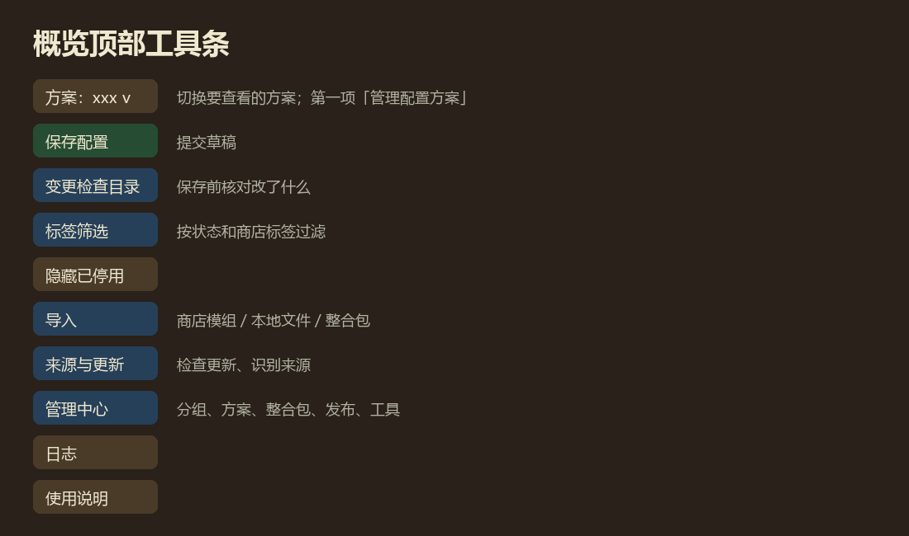
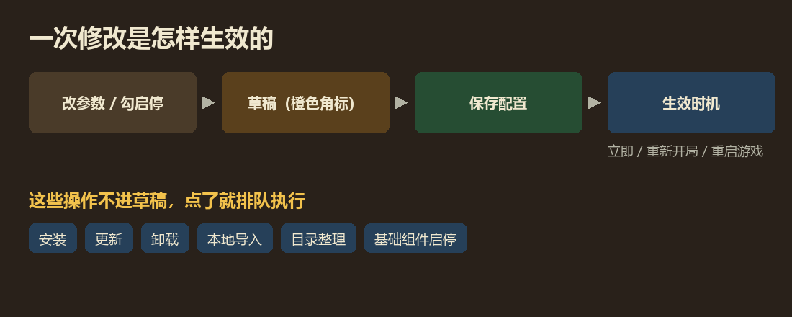

多配置切换
同一套模组，好几套配置
比如「日常」和「整活」各一套，参数、快捷键和哪些模组开着各不相同，随时切换。
配置方案里存了什么
一套配置方案只存三样东西：所有模组的参数、快捷键、每个模组开还是关。
分组、介绍、模组译名这些属于整合包，同一个整合包里的所有方案共用，切换方案时不会变。

主要功能
- 切换只是查看在方案下拉里点一个就切过去看，不会改动正在用的配置。确定要用，再点保存配置。
- 管理方案新建、复制、改名、删除，或者把现在实际的配置记成一套新方案。
- 作者预设保持原样整合包作者给的方案是只读的。你第一次改它时，可以原地保存或另存一份个人方案。
- 随时恢复作者设置改乱了可以把作者原版预设恢复到草稿，方案名后的 * 表示和原版不同。
- 导出配置导出成一个 .mceconfig.json 文件，只含参数、快捷键和启停，适合分享一套设置。
- 导入配置导入的内容先进草稿，核对后再保存。
- 离开前会问有没保存的改动时离开页面或切换方案，会问你保存、放弃还是继续编辑。
- 保存前的检查缺依赖、重复模组、来源未识别、冲突建议都会列出来。大多只是提醒，确认就能保存。
保存和生效是两回事
